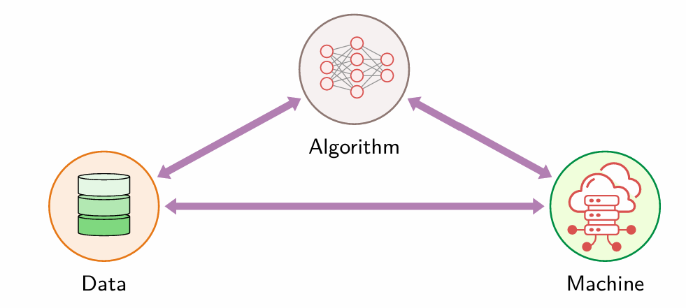
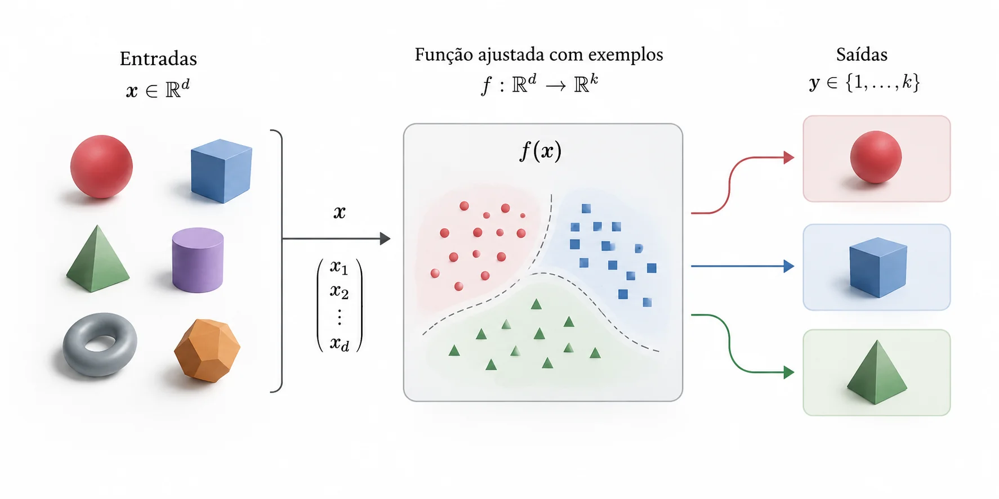
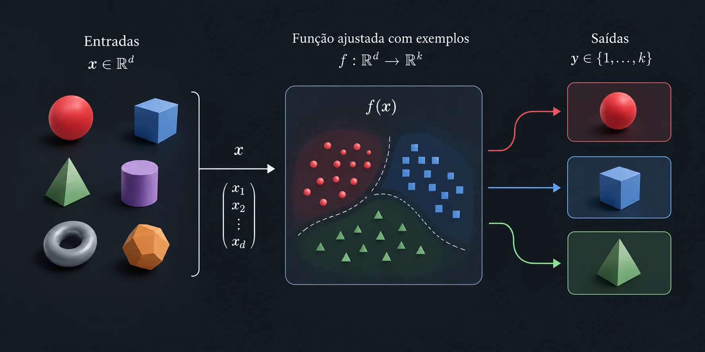
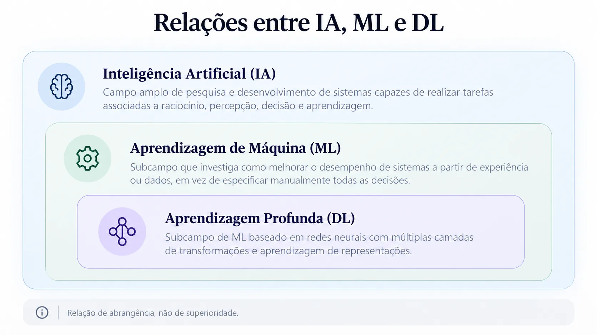
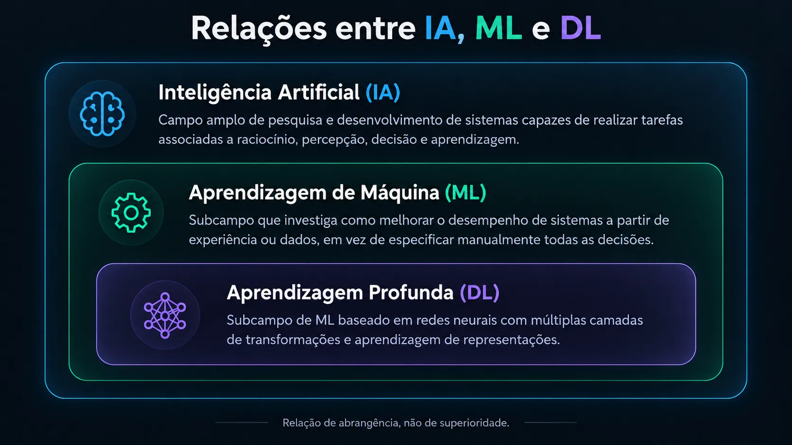

Relações entre as técnicas de inteligência artificial e a aprendizagem de funções a partir de dados. Introdução ao ajuste de modelos e ao ciclo de desenvolvimento de projetos de Machine Learning.
O material está dividido em blocos conceituais. As Partes I e II podem ser trabalhadas independentemente como introdução; as demais aprofundam os fundamentos do treinamento e o fluxo de um projeto.
Objetivos de aprendizagem
Analisar limites de escalabilidade das abordagens estudadas e explicar a transição da programação explícita para a aprendizagem com dados, considerando dados, algoritmos e recursos computacionais.
Situar IA, aprendizagem de máquina (ML) e aprendizagem profunda (DL) em suas relações de abrangência.
Descrever, no contexto supervisionado, como dados orientam a construção de uma função de previsão.
Distinguir classe de modelos, parâmetros, função de perda, otimização e generalização.
Identificar as etapas fundamentais do desenvolvimento de um projeto de ML.
Conteúdo programático
Escalabilidade e aquisição de conhecimento; programação explícita e aprendizagem; dados, algoritmos e máquinas (D·A·M); abordagens de IA; organização conceitual IA–ML–DL; paradigmas de aprendizagem; dados, atributos e rótulos; modelos e funções; classes de hipóteses; ajuste e função de perda; subajuste, sobreajuste e generalização; fluxo de projeto de ML.
Competências e habilidades
C2 · H6: aplicar processos e procedimentos de construção de soluções computacionais.
C3 · H9 e H10: identificar necessidades tecnológicas e avaliar alternativas de modelagem.
C11 · H38: desenvolver e analisar algoritmos e soluções utilizados em engenharia.
C13 · H45: fundamentar a avaliação de modelos em resultados e evidências.
Parte I · Da programação à aprendizagem
Do comportamento programado ao comportamento aprendido
Como construir sistemas quando se torna difícil especificar e manter todas as condições de decisão? Nesta parte, examinaremos os limites da construção manual do conhecimento, a aprendizagem a partir de exemplos e a relação entre dados, algoritmos e recursos computacionais.
Nas aulas de busca, definimos estados, ações e objetivos para explorar alternativas; nos sistemas baseados em conhecimento, fatos e regras permitem inferir conclusões. No raciocínio probabilístico, usamos modelos e evidências para calcular ou atualizar probabilidades. Nos algoritmos genéticos, representamos soluções candidatas e buscamos melhorar sua aptidão ao longo de gerações. Nos algoritmos de aprendizagem de máquina, utilizamos dados ou experiências para aprender padrões e relações, buscando produzir previsões ou decisões adequadas em situações não utilizadas no treinamento.
Escalabilidade: ampliar a busca e ampliar o conhecimento
Escalabilidade é a capacidade de lidar com o crescimento de um problema mantendo custos e resultados compatíveis com os requisitos. Nas buscas, o aumento de estados e alternativas pode elevar muito o tempo de execução e o consumo de memória. Heurísticas ajudam a orientar a exploração, mas sua utilidade depende da representação e do problema.
Nos sistemas baseados em conhecimento, há outro limite: adquirir, formalizar e manter o conhecimento. Para ampliar uma base de regras, precisamos consultar especialistas, resolver conflitos, tratar exceções e atualizar as condições quando o domínio muda. Esse trabalho constitui o gargalo de aquisição de conhecimento. Um computador mais rápido pode executar regras com mais eficiência, mas não determina, por si só, quais regras estão faltando.
Considere o sistema de análise de crédito estudado anteriormente. Uma base pequena pode representar critérios delimitados de renda e comprometimento financeiro. Ampliá-la para diferentes perfis, produtos e contextos exige rever as combinações de condições e sua validade. Parte dessas relações pode ser investigada por aprendizagem com exemplos históricos, desde que os dados e os critérios de avaliação sejam adequados ao problema.
Dois limites distintos: explorar um espaço de estados muito grande é um problema de custo computacional; representar e atualizar o conhecimento necessário é também um problema de modelagem e trabalho humano. Aprender com dados modifica a forma de construir parte desse conhecimento, mas não elimina os custos de processamento nem garante decisões corretas.
Da lógica explícita ao comportamento aprendido
Em um programa baseado em regras explícitas, o desenvolvedor determina diretamente as condições que levam a uma saída. Em um procedimento de aprendizagem supervisionada, exemplos de entradas e respostas conhecidas orientam o ajuste de um modelo. O resultado do treinamento é então utilizado para processar novas entradas.
Programação explícita e aprendizagem supervisionada
Programa com regras definidas explicitamente
Dados de entrada
Regras definidas no código
→
Programa executa as regras
→
Resultado
Programa com modelo aprendido a partir de exemplos
Etapa 1 · Treinamento
Exemplos de entrada e respostas conhecidas
Modelo e critérios definidos pelo desenvolvedor
→
Algoritmo de aprendizagem
→
Modelo ajustado
Etapa 2 · Utilização
Novos dados
Modelo ajustado
→
Programa aplica o modelo
→
Previsão
Figura 1 · Comparação entre duas formas de construir um comportamento computacional. O segundo fluxo representa a aprendizagem supervisionada, que utiliza respostas conhecidas; outros paradigmas de ML serão apresentados na Parte II.
Distinção importante: o treinamento não precisa gerar novas instruções Python. Dependendo da classe de modelos, ele determina valores de parâmetros, divisões de uma árvore ou outras estruturas.
Essa mudança pode ser compreendida como a passagem de Software 1.0, com a lógica de decisão explicitada no código, para Software 2.0, em que parte do comportamento é determinada por treinamento com dados. A expressão destaca duas formas de construir o comportamento de uma aplicação, que podem coexistir em um mesmo sistema.
Também muda a investigação de falhas. Além de examinar a execução do código, precisamos verificar a qualidade e a representatividade dos exemplos, os rótulos e as condições de uso. Um modelo pode continuar executando normalmente e, ainda assim, produzir previsões piores quando os dados encontrados em operação diferem daqueles usados no treinamento.
Dados, algoritmos e máquinas: o modelo D·A·M
A aprendizagem desloca parte do esforço de escrever regras para selecionar exemplos, representar informações e avaliar resultados.
Um sistema de ML pode ser analisado a partir de três dimensões interdependentes: Data (dados), Algorithm (algoritmo) e Machine (máquina). O diagrama D·A·M mostra que a escolha de um algoritmo deve ser examinada junto dos dados disponíveis e dos recursos necessários para executá-lo.

Figura 2 · Dados, algoritmo e máquina. As setas indicam relações de dependência: alterar uma dimensão pode exigir mudanças nas outras. Fonte: Reddi, Introduction to Machine Learning Systems, Volume I; imagem do material de referência.
D · Dados
Quantidade, qualidade, diversidade e representatividade dos exemplos. Os registros precisam representar as situações em que o modelo será utilizado; apenas acrescentar dados repetidos não garante um modelo melhor.
A · Algoritmo
Família de modelos e procedimento de aprendizagem. A escolha determina quais relações podem ser representadas e quais custos surgem no treinamento e na produção de previsões.
M · Máquina
Processamento, memória, armazenamento e comunicação. Um modelo precisa atender às condições de execução do serviço, incluindo tempo de resposta e custo de operação.
Ampliar o conjunto de dados pode exigir mais armazenamento e tempo de treinamento. Um modelo mais complexo pode demandar mais memória e aumentar o tempo necessário para produzir previsões. Uma infraestrutura maior pode acelerar o processamento, mas não corrige dados sem representatividade. A escalabilidade do sistema depende da combinação dessas três dimensões.
Questão para análise: um sistema foi treinado com poucos exemplos e será utilizado em um conjunto mais amplo e diverso de situações. Que mudanças podem ser necessárias nos dados, no algoritmo e na infraestrutura? Por que apenas aumentar a capacidade de processamento pode ser insuficiente?
As abordagens não são mutuamente excludentes
Aprendizagem de máquina não substitui os demais métodos de IA. Uma heurística utilizada por um algoritmo de busca pode ser estimada a partir de exemplos; probabilidades podem ser aprendidas com dados; e um algoritmo genético pode ser empregado para otimizar parâmetros de um modelo. O papel de uma técnica depende de como ela é utilizada no sistema. Executar A* ou aplicar o Teorema de Bayes, por si só, não significa treinar um modelo.
Síntese: construir e avaliar um comportamento aprendido
Na aprendizagem de máquina, parte das relações utilizadas para produzir essas respostas é ajustada a partir de dados ou experiências. O desenvolvedor continua definindo o problema, escolhendo a representação e programando os procedimentos necessários.


Figura 3 · Objetos representados por vetores de características x são associados a diferentes saídas por uma função f(x) ajustada a partir de exemplos. As regiões de decisão são ilustrativas; nenhum modelo foi treinado para produzir este diagrama.
Questões para discussão: quais decisões continuam sob responsabilidade do desenvolvedor quando parte do comportamento é aprendida? Como um mesmo sistema poderia combinar regras explícitas com um modelo aprendido?
Na próxima parte, situaremos a aprendizagem de máquina no campo da inteligência artificial e distinguiremos ML de aprendizagem profunda (DL).
Parte II · Organização do conhecimento
Relações entre IA, ML e DL
IA, ML e DL não são três áreas paralelas. A relação usual é de inclusão: a aprendizagem profunda constitui um subcampo da aprendizagem de máquina, que integra o campo mais amplo da inteligência artificial.


A relação é de abrangência conceitual (DL ⊂ ML ⊂ IA), não de superioridade. Há técnicas de IA que não dependem de ML, e diferentes métodos podem ser combinados em um mesmo sistema.
IA não se reduz a ML
Uma implementação de A* pode utilizar uma heurística definida pelo projetista, sem treinamento com exemplos. Da mesma forma, um sistema de regras pode realizar inferências sem aprender novas regras. Ambos pertencem ao campo da IA, mesmo que não dependam de aprendizagem de máquina.
Por outro lado, ML pode participar da construção de heurísticas, da estimativa de probabilidades, da definição de políticas de decisão e de sistemas que combinam componentes simbólicos e estatísticos. As fronteiras entre abordagens descrevem métodos de pesquisa, não impedem sua integração.
Aprendizagem de representações
Na aprendizagem de máquina tradicional, o desenvolvedor frequentemente projeta atributos que descrevem as entradas. Na aprendizagem profunda, modelos podem aprender também representações a partir dos dados, embora a preparação dos dados e as decisões de projeto continuem necessárias.
Três paradigmas de aprendizagem: visão inicial
A expressão aprendizagem de máquina reúne diferentes formas de utilizar dados ou experiência para melhorar o desempenho de sistemas. Para comparar os três paradigmas, observaremos cinco aspectos: entrada, sinal de aprendizagem, procedimento, o que é aprendido e resultado produzido. Esses aspectos são comuns como perguntas de análise, mas suas respostas variam conforme o paradigma.
O sistema recebe exemplos de entradas acompanhadas das respostas correspondentes. A partir desses exemplos, procura construir uma função capaz de produzir respostas para novas entradas.
Duas tarefas comuns são:
ClassificaçãoPrevê uma classe ou categoria.Exemplo: e-mail spam ou legítimo.
RegressãoEstima um valor numérico.Exemplo: tempo de resposta de uma API, em ms.
Classificação e regressão são tarefas distintas, que exigem saídas e critérios de avaliação adequados. Os diagramas apresentam exemplos ilustrativos.
Os dados são apresentados sem respostas previamente identificadas para a tarefa. O procedimento procura estruturas e regularidades presentes nas observações, como grupos de elementos com características semelhantes.
O agrupamento (clustering) é um exemplo: podemos procurar padrões de utilização de um serviço a partir de registros de atividade, sem fornecer antecipadamente a qual grupo pertence cada registro.
O agrupamento ilustra uma aplicação, mas não esgota a aprendizagem não supervisionada: também podem ser aprendidas representações e estruturas dos dados.
Um agente interage com um ambiente e escolhe ações. Em resposta, recebe novas observações e sinais de recompensa, que orientam a melhoria de sua estratégia de decisão ao longo das interações.
Por exemplo, em uma simulação de navegação, um agente pode aprender quais ações favorecem alcançar um objetivo, considerando recompensas e consequências das decisões tomadas.
Diferentemente dos exemplos supervisionados, não é necessário fornecer, para cada situação, uma resposta correta que o agente deva reproduzir.
Elementos de comparação entre os paradigmas
As figuras mostram exemplos de funcionamento. O quadro a seguir reúne os principais elementos de cada abordagem, permitindo identificar o que é compartilhado e o que se diferencia.
Quadro 1 · Cinco aspectos para comparar os paradigmas de aprendizagem
Aspecto
Supervisionada
Não supervisionada
Por reforço
Entrada
Dados de entrada acompanhados de respostas conhecidas.
Dados sem rótulos de resposta para a tarefa.
Estados ou observações recebidos do ambiente.
Sinal de aprendizagem
Respostas conhecidas (rótulos ou valores-alvo).
Não utiliza rótulos-alvo; as regularidades dos dados são exploradas segundo um critério definido pelo método.
Recompensas associadas à interação com o ambiente.
Procedimento
Constrói ou ajusta um modelo utilizando exemplos e suas respostas.
Procura estruturas, relações ou representações nos dados.
Aprende com as consequências de ações realizadas no ambiente.
O que é aprendido
Modelo capaz de prever respostas para novas entradas.
Agrupamentos, representações ou outras estruturas dos dados.
Política de decisão, valores de ações ou outras estruturas úteis à escolha de ações.
Resultado produzido
Classe (classificação) ou valor numérico (regressão).
Grupos, padrões ou representações.
Ações ou decisões orientadas pelo que foi aprendido.
O que é comum? Os três paradigmas utilizam entradas, procedimentos computacionais e alguma forma de aprendizagem. O que muda? A informação disponível para orientar esse processo, aquilo que é aprendido e o modo como o resultado é utilizado.
Recorte adotado: nas próximas partes, utilizaremos a aprendizagem supervisionada para compreender a relação entre dados, funções, ajuste e generalização. Essa base também será utilizada no estudo posterior de redes neurais.
Parte III · Fundamentos da aprendizagem
O modelo aprendido como uma função computacional
Nas partes anteriores, vimos que um modelo pode relacionar características de entrada a uma saída. Agora, vamos representar essa relação matematicamente e distinguir a escolha de uma família de funções do ajuste realizado com dados.
Como representar entradas e saídas?
Na aprendizagem supervisionada, trabalhamos com exemplos nos quais conhecemos tanto as entradas quanto as respostas observadas. Esses exemplos formam um conjunto de dados:
D = {(x₁, y₁), (x₂, y₂), …, (xₙ, yₙ)} → ŷ = fθ(x)
D é o conjunto de exemplos; x representa a entrada; y é a resposta observada; ŷ é a previsão produzida pelo modelo; e θ denota seus parâmetros, neste caso. O objetivo é obter uma função que produza previsões adequadas para entradas não utilizadas no ajuste.
Na figura dos objetos, apresentada na Parte I, cada entrada podia ser descrita por um vetor de características (por exemplo, tamanho, forma e outras medidas). Para simplificar a análise matemática, nosso próximo exemplo utilizará uma única característica numérica. A ideia de relacionar entradas e saídas permanece a mesma.
Problema: estimar o tempo de processamento de um lote
Uma aplicação processa periodicamente lotes de registros. Queremos estimar quanto tempo uma execução levará em função da quantidade de registros, supondo condições de execução aproximadamente constantes.
Em nossas medições sintéticas, x indica a quantidade de registros em milhares e y indica o tempo de processamento em segundos. A tabela contém as observações, e o gráfico representa os mesmos pares de valores.
Observações disponíveis
Registros (mil)
Tempo (s)
1
3,0
2
5,2
3
6,9
4
9,1
5
10,8
6
13,2
Observações representadas no plano
Gráfico de dispersão dos valores observados. Ainda não foi ajustada nenhuma função.
Questão para análise: quando acrescentamos mil registros, o tempo aumenta aproximadamente pela mesma quantidade? Que tipo de função parece compatível com a distribuição dos pontos?
Escolher uma família de funções
Os valores sugerem um aumento de aproximadamente dois segundos por mil registros. Uma primeira hipótese é representar a relação por uma função afim, chamada frequentemente de modelo linear no contexto de regressão. Isso significa escolher uma família de funções possíveis, e não determinar ainda qual delas é a mais adequada aos dados.
Família ou espaço de hipóteses
fθ(x) = ax + b
A forma matemática é definida pelo desenvolvedor. Os coeficientes a e b ainda podem assumir diferentes valores. O conjunto dessas funções constitui uma classe de modelos, também chamada de espaço de hipóteses.
Uma função candidata
f(x) = 2x + 1
Ao escolher a = 2 e b = 1, definimos uma função específica dessa família. Esses números, por enquanto, foram escolhidos para exemplificar; não foram calculados por um procedimento de aprendizagem.
Nesse modelo, o parâmetro a é a inclinação: representa o acréscimo previsto no tempo para cada mil registros adicionais (em segundos por mil registros). O parâmetro b é o intercepto: representa o tempo previsto para x = 0. Como não medimos lotes com zero registros, interpretar b como um custo inicial real exige cuidado; trata-se, aqui, de uma extrapolação do modelo.
Programar a função não é treiná-la
Compare as duas implementações em Python. Na primeira, os números fazem parte das instruções; na segunda, eles são parâmetros fornecidos à função. Nenhuma das implementações aprende por si só. Para haver aprendizagem, um procedimento adicional deve utilizar os exemplos de D para determinar os valores dos parâmetros.
Coeficientes definidos no código
def estimar_tempo(carga):
return 2 * carga + 1
O programador escolheu diretamente a inclinação e o intercepto.
Coeficientes ajustáveis
def estimar_tempo(carga, a, b):
return a * carga + b
A estrutura foi programada, mas um algoritmo de treinamento poderá estimar a e b a partir dos dados. Em ambos os exemplos, carga está expressa em milhares de registros.
Em outras classes de modelos, o que se aprende pode incluir pesos de redes neurais, divisões em árvores ou outras estruturas. O princípio é semelhante: programamos o procedimento de aprendizagem e utilizamos seus resultados para determinar parte do comportamento do sistema.
Comparar funções candidatas com os dados observados
Para a mesma família f(x) = ax + b, podemos considerar três funções com b = 1 e inclinações diferentes. O gráfico apresenta as três retas junto das seis observações da tabela inicial. Isso permite comparar visualmente previsões e medições.
Três funções afins e seis medições
f₁(x) = x + 1a = 1; b = 1
f₂(x) = 2x + 1a = 2; b = 1
f₃(x) = 3x + 1a = 3; b = 1
Os pontos representam as seis medições; as linhas são funções candidatas, ainda não ajustadas por treinamento.
Figura · As seis medições aparecem sobre as funções candidatas. A reta f₂(x) = 2x + 1 acompanha melhor a tendência visível, mas ainda não utilizamos um critério quantitativo para escolher parâmetros.
Observe o caso em que x = 4, isto é, um lote de quatro mil registros. A medição correspondente foi de 9,1 segundos:
Função
Previsão para x = 4
f₁(x) = x + 1
5 s
f₂(x) = 2x + 1
9 s
f₃(x) = 3x + 1
13 s
Valor observado
9,1 s
A segunda função produz a previsão mais próxima nesse exemplo. Entretanto, para avaliar a adequação de um modelo, não basta considerar uma observação isolada. Precisamos examinar seus erros no conjunto de dados e estabelecer um critério para comparar alternativas.
E se a família escolhida não representar bem os dados?
Uma família de funções afins representa apenas retas. Se a relação real tiver curvatura relevante, podemos considerar uma família mais flexível, como f(x) = ax² + bx + c, que inclui funções quadráticas quando a ≠ 0. Mesmo o melhor ajuste possível dentro de uma família de retas não se torna uma curva apenas pela alteração de seus parâmetros.
Portanto, selecionar a família de modelos estabelece quais funções podem ser consideradas; ajustar os parâmetros procura uma função adequada dentro dessa família. Na Parte IV, utilizaremos um critério de erro para transformar essa escolha em um problema de otimização.
Parte IV · Aprendizagem e otimização
Como encontrar uma função adequada dentro da família escolhida?
Precisamos definir como avaliar os erros da função e utilizar um procedimento capaz de encontrar parâmetros que produzam resultados melhores segundo esse critério.
Para investigar o ajuste e a generalização em outro conjunto de dados, considere agora a estimativa do tempo médio de resposta de um serviço em função de uma medida simplificada de carga. Os valores são sintéticos, criados apenas para estudar a relação entre dados e modelos. Temos registros utilizados para ajustar o modelo e observações reservadas para avaliação.
Carga (x)
Tempo observado (y, ms)
Destinação
1
3
Treinamento
2
4
Treinamento
3
6
Treinamento
4
8
Avaliação reservada
5
11
Treinamento
6
14
Treinamento
7
18
Avaliação reservada
8
23
Treinamento
Erro de previsão
Para cada observação, podemos calcular a diferença entre o valor observado e a previsão. Uma forma simples de avaliar o conjunto é utilizar a média dos quadrados dos erros, conhecida como erro quadrático médio (MSE).
MSE = (1/n) · Σ (yᵢ − ŷᵢ)²
Na família linear, procurar os melhores parâmetros para esse critério equivale a encontrar valores de a e b que minimizem o MSE nos dados de treinamento. Isso é um problema de otimização. Uma solução pode ser obtida analiticamente por mínimos quadrados ou estimada por procedimentos iterativos, dependendo do modelo e das condições.
Experimento: ajuste de uma reta aos dados
Modifique os parâmetros da função f(x) = ax + b e observe como o erro de treinamento muda. Depois, utilize o ajuste por mínimos quadrados e compare os resultados. Os dados reservados não são utilizados para calcular a reta.
f(x) = 2,0x + 1,0
Erro quadrático médio (treino): —
Avaliação reservada: não realizada.
Ao modificar os parâmetros, a avaliação reservada é ocultada novamente. Em um projeto real, o conjunto de teste final não deve orientar o ajuste de parâmetros nem a escolha de modelos.
TreinamentoDados reservadosReta candidata
O gráfico apresenta as observações em uma mesma escala. A reta pode deixar de representar adequadamente a tendência mesmo depois de minimizado o erro da família linear.
Conexão com a Aula 08: o problema também pode ser formulado como busca por parâmetros que minimizem uma função de erro. Algoritmos genéticos podem ser utilizados nessa otimização, embora não sejam necessários para resolver este pequeno problema de regressão linear.
Parte V · Avaliação de modelos
O melhor ajuste é necessariamente o melhor modelo?
Não. A função que produz o menor erro nos dados de treinamento pode apresentar resultados insatisfatórios quando aplicada a observações novas.
Seleção da família e ajuste dos parâmetros
Uma função linear pode ser a melhor dentro da família das retas segundo o MSE de treinamento, mas essa família pode ser inadequada para representar uma relação não linear. Aumentar a flexibilidade do modelo amplia as funções candidatas; ao mesmo tempo, pode facilitar o ajuste de variações específicas ou ruídos do treinamento.
Subajuste (underfitting)
O modelo não consegue capturar regularidades relevantes, por limitações de sua representação ou por um treinamento insuficiente. Pode apresentar desempenho ruim tanto no treinamento quanto em novos dados.
Sobreajuste (overfitting)
O modelo se ajusta excessivamente às particularidades do conjunto de treinamento e apresenta desempenho pior nos novos dados. Um erro de treinamento muito pequeno, isoladamente, não comprova boa generalização.
Para que servem treino, validação e teste?
1Treinamento
Utilizado para ajustar a função ou construir o modelo a partir dos exemplos disponíveis.
2Validação
Utilizado para comparar configurações, famílias de modelos e hiperparâmetros, sem recorrer ao teste final.
3Teste
Reservado para uma avaliação final em dados não utilizados no ajuste nem na seleção do modelo.
Em bases pequenas, a validação cruzada pode substituir uma única divisão de validação, mas o princípio permanece: o conjunto de teste final deve ser preservado durante as decisões de modelagem. O experimento anterior usa uma divisão didática simplificada para mostrar apenas a diferença entre ajustar e avaliar.
Questão: se uma função polinomial de alto grau reproduz todos os dados de treinamento e uma reta apresenta pequenos erros nesses mesmos registros, podemos concluir, apenas por isso, que a função polinomial produzirá melhores previsões? Justifique.
Parte VI · Engenharia de sistemas de ML
O fluxo de um projeto de aprendizagem de máquina
Aprender uma função é uma etapa de um processo maior. Para utilizar um modelo em uma aplicação, precisamos definir um problema, organizar os dados e estabelecer critérios de avaliação e operação.
1Definir o problema
Qual decisão ou previsão será produzida? Quais requisitos e critérios de sucesso importam para o sistema?
2Obter e compreender os dados
Quais observações representam o fenômeno? Como foram coletadas? Há erros, lacunas ou vieses?
3Preparar e separar
Como representar as variáveis? Quais exemplos serão usados para treino, validação e teste? Como evitar vazamento de informação?
4Selecionar classes de modelos
Quais famílias e representações são adequadas à tarefa, à quantidade de dados e aos requisitos computacionais?
5Treinar e validar
Como ajustar os modelos, comparar configurações e identificar limitações sem utilizar o conjunto de teste final?
6Avaliar, integrar e monitorar
Como verificar o desempenho final, incorporar o modelo ao software e acompanhar mudanças de dados e comportamento em uso?
O fluxo não é rigidamente linear. Resultados de validação podem exigir voltar à escolha de atributos ou modelos; dificuldades na operação podem exigir nova coleta e treinamento. O desenvolvimento combina decisões de modelagem estatística com práticas de engenharia de software.
Aplicação ao experimento do tempo de resposta
Etapa
Decisão no exemplo
Problema
Estimar o tempo médio de resposta a partir da carga do serviço.
Dados
Observações sintéticas de carga e tempo, inicialmente apresentadas em uma tabela.
Modelagem
Investigar se uma função linear é suficiente e quais outras famílias poderiam ser consideradas.
Ajuste
Estimar parâmetros que minimizem o erro no treinamento.
Avaliação
Observar os erros em registros reservados, reconhecendo que os dados didáticos são insuficientes para validar uma implantação real.
Uso
Considerar integração, limites das previsões e monitoramento caso o problema fosse real.
Síntese e verificação
Três questões distintas
Que tipo de função considerar?
Escolha de uma classe de modelos ou espaço de hipóteses.
Que função encontrar nessa classe?
Ajuste ou otimização com base em um critério e dados de treinamento.
Como verificar sua utilidade?
Avaliação da capacidade de generalizar para observações não utilizadas na construção e seleção.
Como utilizá-la em software?
Definição de requisitos, integração, testes, monitoramento e manutenção do sistema de ML.
Questões para discussão
Uma implementação de A* precisa necessariamente utilizar aprendizagem de máquina? Explique.
Qual relação hierárquica existe entre IA, ML e DL?
Em uma função f(x) = ax + b, o que significa escolher a família e o que significa estimar seus parâmetros?
Por que a melhor função de uma família pode não ser adequada para o problema?
Qual é a diferença entre minimizar o erro de treinamento e avaliar generalização?
Em qual etapa do fluxo de um projeto de ML são tomadas decisões sobre os dados de teste?
Conclusão conceitual: em aprendizagem supervisionada, construir um modelo envolve escolher uma representação para a relação entre entradas e saídas, aprender a partir de exemplos e avaliar se o comportamento obtido se mantém em observações novas.
Referências
Bibliografia de apoio
RUSSELL, Stuart J.; NORVIG, Peter. Artificial Intelligence: A Modern Approach. 4. ed. Pearson, 2022. Capítulos 19 (Learning from Examples) e 22 (Deep Learning).
LUGER, George F. Artificial Intelligence: Structures and Strategies for Complex Problem Solving. 6. ed. Pearson, 2009. Parte IV, capítulos 10–13.
REDDI, Vijay Janapa. Introduction to Machine Learning Systems. Volume I, capítulo 1 (mudança de paradigma, evolução dos gargalos e relações entre dados, algoritmos e máquinas) e capítulo 3. Material disponível em: mlsysbook.ai.